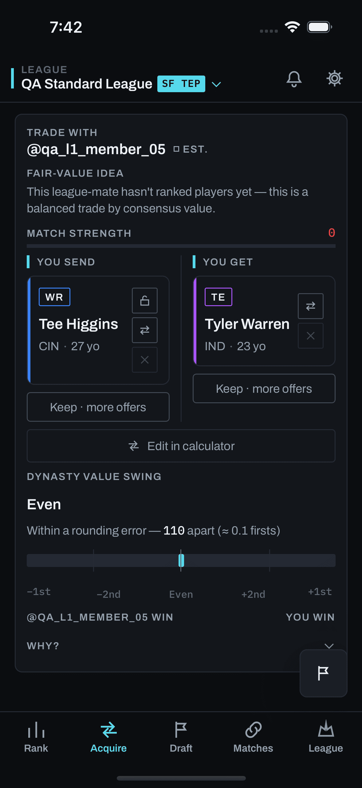

Actual before
Real app capture · 10 Aug 2026.
Historical build; not today’s UI.

Original: screens/mobile/trades/populated.png
23:42:47 UTC
Unmodified local copy. The capture library is frozen at 11 Aug 2026; the newer lineup block appears in the source reconstruction alongside it.
Existing evidence
Source reconstruction · main, 04 Sep 2026.
Selected card excerpt, hypothetical roster data.
@northside
Tee Higgins
Tyler Warren
Changed starters and positional-rank movement on the fronted card. The calculator has the full before/after lineup, tier/rank changes, and total lineup value.
Pass/Like → value bar → lineup / optional playoff outlook. Existing “Why?”, partner fit, hesitation, and rationale stay where they are. These surrounding blocks are omitted from this excerpt.
The existing display aligns interchangeable slots to keep changes concise. The additional receipt follows the replacement into WR, through FLEX, and down to the bench—and checks the other team’s TE.
Geometry and labels: TradeCard.tsx + CardImpactBlock.tsx. Latest relevant changes: 24–31 Aug 2026. All displayed ranks are invented examples.
One addition
Proposed extension · not shipped UI.
One disclosure below existing team impact; opened for review.
Tyler Warren to your team
Roster after trade
Review controls sit outside the app frame. Switch teams, expand a replacement, then try the gap and estimated-settings examples. Collapse the module to inspect the proposed resting size.